Sons
Objeto Audio
Uma parte muito importante de um jogo é o som, no nosso jogo vamos adicionar um objeto do tipo Audio para poder tocar sons:

Quais sons escolher?
Isso depende do seu jogo. Vamos listar os que foram utilizados no jogo de exemplo, para os seus sons você pode:
Procurar em sites que permitem o download gratuito (a seguir)
Gravar seus próprios sons.
- Você pode usar um celular ou um computador para gravar sons específicos que não consiga encontrar.
- Encontre um lugar silencioso, pense em como reproduizir o som que tem em mente, grave e edite usando as ferramentas que mostraremos a seguir.
Na hora de escolher considere que você pode:
- Tocar mais de um som ao mesmo tempo;
- Tocar sons de maneira encadeada;
- Definir vários sons para um mesmo evento e escolher um deles quando esse evento acontecer.
Os sons utilizados no jogo foram:
Músicas temas do jogo:
Pular - esses dois sons tocam ao mesmo tempo quando o jogador está pulando
Andar - a cada passo do jogador um desses sons toca aleatoriamente
Cair - quando o jogador cai no chão, esse é o som tocado:
Coletar moeda - quando uma moeda atinge o jogador esses dois sons tocam ao mesmo tempo
Acender tocha - são três sons combinados: fósforo acendendo, tocha sendo acendida e fogueira:
Player nascendo no checkpoint - quando o jogador morre, esse é o som tocado assim que ele renascer:
Player puxando o arco:
Player soltando o arco:
Impacto da flecha:
Monstro - se o jogador estiver perto de um inimigo, ele começará a tocar os seguintes sons:
Monstro sendo atingido pela flecha - um desses sons será escolhido aleatóriamente:
Monstro morrendo - existem dois grupos de sons, um para o monstro e outro para as moedas, um som de cada grupo será escolhido:
Inimigo:
Moedas:
Player sendo atacado: quando o jogador é atacado, um desses sons é escolhido e tocado
Onde encontro efeitos e músicas?
Agora você precisará encontrar sons para colocar no jogo, existem vários sites que disponibilizam sons gratuitamente, mas são em inglês, você precisará traduzir o termo que quer procurar. Tente buscar sons nos sites (listados por ordem de qualidade):
- Requer cadastro para baixar
- Tem tanto efeitos comuns como sons de jogos
- Tem músicas
- Não requer cadastro para baixar
- Tem apenas efeitos para jogos
- Tem músicas
- Não requer cadastro para baixar
- Tem apenas efeitos para jogos
- Não requer cadastro para baixar
- Tem efeitos e músicas comuns e para jogos
- Não requer cadastro para baixar
- Tem apenas músicas
- Não requer cadastro para baixar
- Tem efeitos e músicas comuns
Melhor forma de nomear os arquivos
É recomendável que você pense em uma estrutura para o nome dos sons, por exemplo, para os seguintes sons, os seguintes nomes de arquivos são interessantes:
- Som do jogador pulando:
player_jumpoujogador_pulo - Som do jogador caindo:
player_falloujogador_caindo - Som do jogador andando:
player_walkoujogador_andando - Segundo som do jogador andando:
player_walk2oujogador_andando2 - Som de espada atacando:
sword_attakouespada_ataque - Som do inimigo gritando:
enemy_screamouinimigo_grito - Segundo som do inimigo gritando:
enemy_scream2ouinimigo_grito2 - Terceiro som do inimigo gritando:
enemy_scream3ouinimigo_grito3 - Som do inimigo pulando:
enemy_jumpouinimigo_pulo
Escolhendo e editando os sons
Na hora de escolher o som você deve prestar atenção em algumas coisas
Se o som se repetir muitas vezes no jogo, ele deve ser mais curto e mais baixo
- Podemos controlar o volume do som dentro do construct
- O tamanho depende da sua escolha
Alguns sons estão em arquivos com outros sons ou demoram muito para começar
- Precisamos cortar esses arquivos. Uma ferramenta on-line interessante é o audiotrimmer.com
Veja que quando esse som começa (no começo da linha azul) não há som por um bom tempo, isso dificulta sincronizar o efeito sonoro com o evento que o causou no jogo.
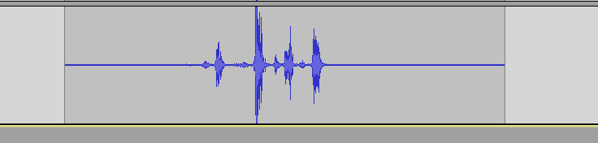
Precisamos de sons que pareçam assim:
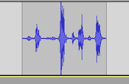
Veja que o efeito acontece logo que o som começa. Essa ação de cortar o começo e o fim de um som quando eles não contém nada é chamado de trim ou "aparar".
Caso seu som se pareça mais com o primeiro use o seguinte botão para importar o som.

O site tentará cortar os sons automaticamente, mas você pode mover as abas para fazer o processo manualmente.
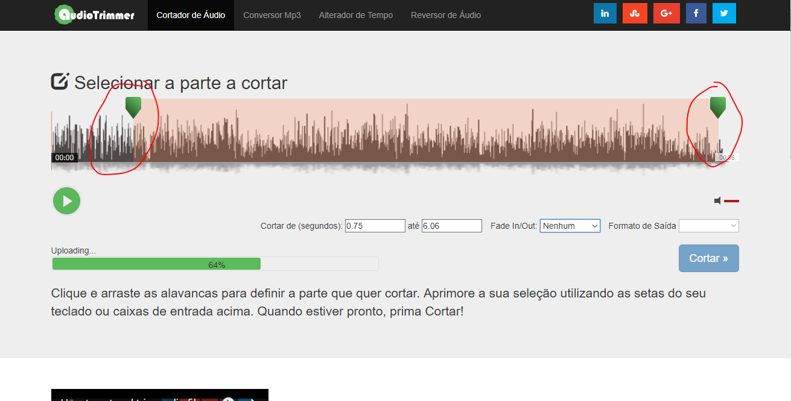
Quando tiver finalizado clique em Cortar

E então em Descarregar

Caso precise editar os sons adicionando efeitos use o twistedwave.com
Importando Sons
Usando os nomes dessa forma você conseguirá localizar os sons mais facilmente no construct
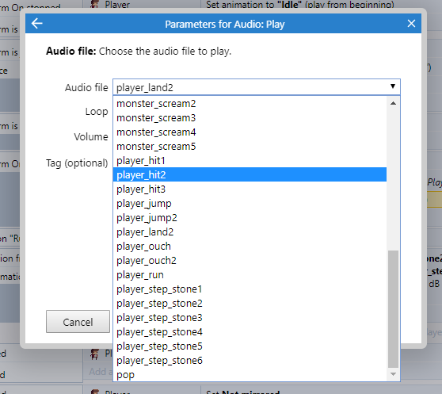
Com seus sons baixados e nomeados faça o seguinte para adicioná-los ao construct:
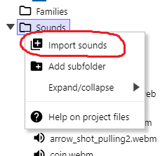


Espere os sons carregarem e o botão Import ser liberado, então clique nele

Tocando os sons
Quando um evento acontecer

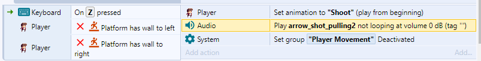


Dois sons ao mesmo tempo e volume
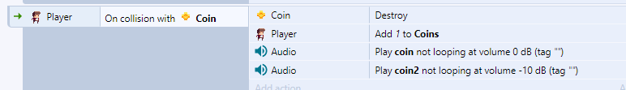

Som de uma lista
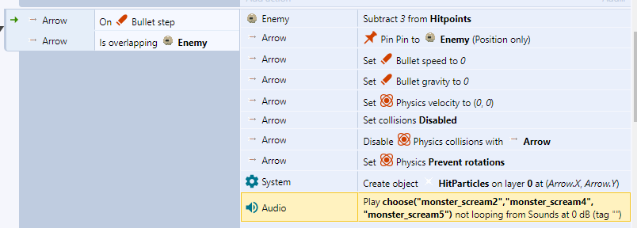

Som em loop
Se você tem um tema que deseja tocar em loop, use o seguinte
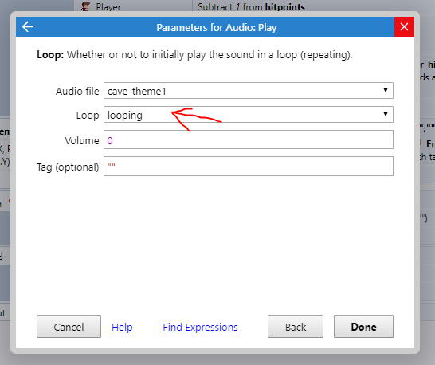

Mais de um som em loop
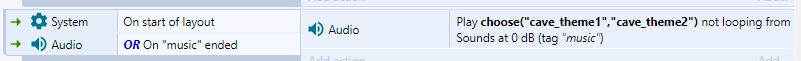

Encadeando sons
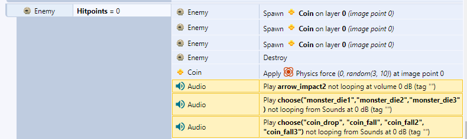
Adicionando delay
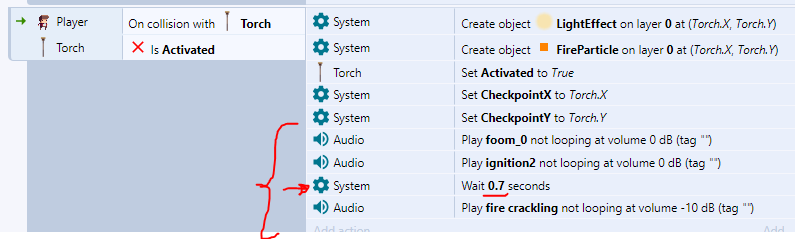
- Obs.: se for usar o delay, coloque os sons no fim do bloco
Tocar em eventos que não são do tipo On ...

Fazemos o uso do Trigger Once para que o som não toque infinitamente enquanto o botão estiver clicado.
Sincronizar som e animação

Nesse caso, o som dos passos irá tocar quando a animação Run estiver acontecento nos quadros 2 ou 7 que são os que o jogador está com o pé no chão.
Tocar dependendo da distância
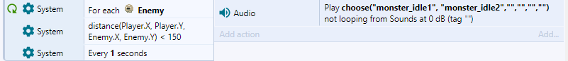
Nesse caso os inimigos só irão fazer som:
- Quando estiverem a menos de 150 pixels de distância do jogador.
- A cada um segundo, com uma chance de 2/6 de ter um som.